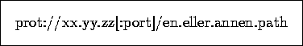

6.1.2 Generell URL syntaks


Neste: 6.1.3 Linker
Opp: 6.1 Introduksjon til linker
Forrige: 6.1.1 URLer
Generelt ser en URL slik ut

der
- prot
er navnet på en støttet protokoll i World Wide Web. Eksempler kan f.eks. være
ftp, http, wais, news, telnet og file.
- xx.yy.zz
er et såkalt Internet domainnavn eller IP adresse.
- [port] (optional)
er et TCP port nummer. Utelates dette, brukes standard TCP
portnummeret for denne protokollen slik IANA har spesifisert.
har spesifisert.
- en.eller.annen.path
er en lokal spesifikasjon (filspesifikasjon f.eks.) som evalueres
relativt til maskinen og protokoll tjeneren som er angitt
tidligere i URLen.
Ovenstående syntaks spesifiserer såkalt fulle URLer. Det finnes også
noe som kalles partielle eller relative URLer. Disse vil evalueres
og tolkes relativt til det dokumentet de forekommer i, dvs. relativt til
navnerommet til den tjeneren (f.eks. HTTP) som betjener originaldokumentet.
Dette vil gå klarere fram i neste avsnitt om linker.
© Oslonett AS og Intervett AS, 03/05-95, 23:04:38